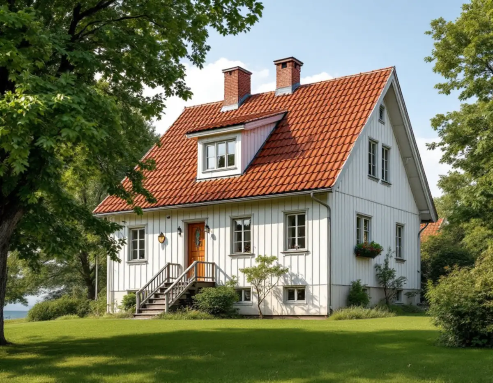
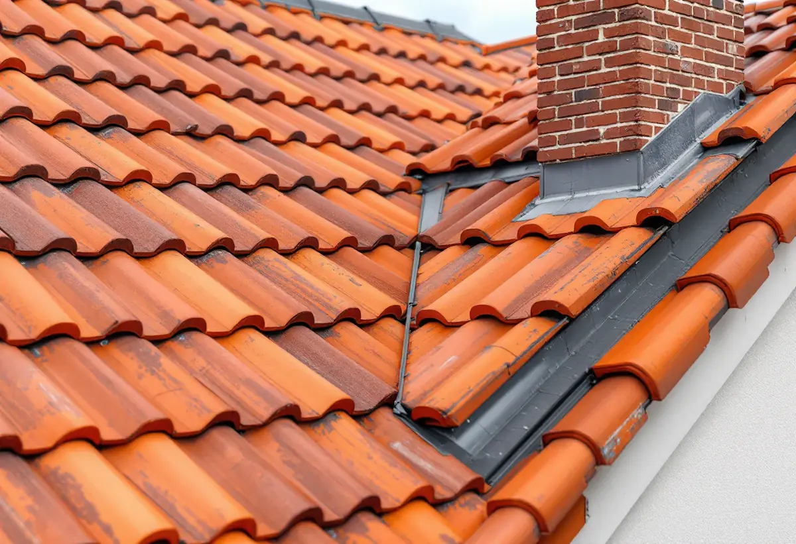
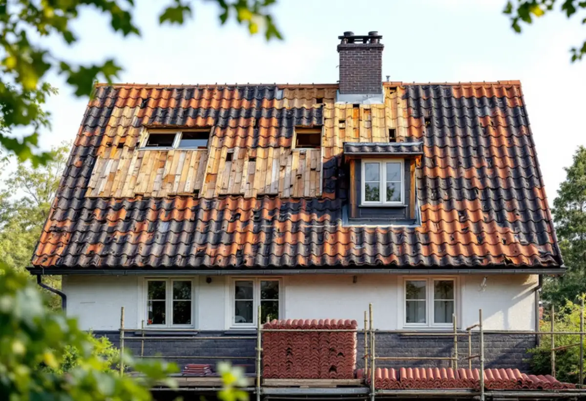

Platsbesök
Vi ser vad som ligger på taket i dag och vilka detaljer huset har.
Vid ett takbyte i Hägersten avgör ett enda val om du behöver tänka på bygglov: lägger du samma material igen eller byter du till ett annat? Geal Entreprenad AB byter tak på villor och radhus i Mälarhöjden, Västberga och resten av Hägersten och reder ut frågan innan materialet beställs.

Boverket förklarar att byte av taktäckningsmaterial betyder ändring till ett annat material, till exempel från tegeltak till plåttak. Det kan också vara tak med integrerade solceller eller solfångare. Att byta till samma material och utförande som förut är däremot inte en fasadändring utan underhåll.
Gränsen spelar roll eftersom fasadändringar på villor i särskilt kulturhistoriskt värdefulla områden kräver bygglov, medan underhåll inte gör det. Lägger du tegel på ett tegeltak är du på den säkra sidan. Vill du byta till plåt, betongpannor eller ett annat utförande kontrollerar vi först vad som gäller för just din fastighet.

Stockholms stad hänvisar till Stadsmuseets klassificeringskarta. Riksintressen för kulturmiljövården har blå ring, områden som översiktsplanen pekar ut som särskilt kulturhistoriskt värdefulla har grön ring, och klassificerade byggnader är markerade med blått, grönt, gult eller grått. Inom ring eller med blå eller grön markering behöver du bygglov för åtgärder som annars är lovfria.
Gul eller grå markering kräver inget lov om inget annat skäl talar för det. Streckade ytor är miljöer som ännu inte inventerats, och där kan lov behövas. Staden betonar att du som byggherre själv ansvarar för att ta reda på vad som gäller, och att du kan kontakta Stadsmuseet för rådgivning.
Mälarhöjden växte upp som villasamhälle efter privata initiativ genom större markförvärv, skriver staden i sin strategi för småhusområden. I strategins tabell är Mälarhöjden markerat både som kulturhistoriskt värdefull miljö och som område med generösa byggrätter i äldre planer.
Enligt stadens områdesfakta för 2025 finns 988 småhus med äganderätt i Mälarhöjden och 955 i stadsdelen Hägersten. Bebyggelsen i villastäderna är enligt strategin brokig, med hus från flera epoker. Därför ser vi på varje hus för sig, och om det befintliga taket redan är ett byte från originalet går vi tillbaka till ritningarna.
Stockholms stad påpekar att alla ändringar ska göras varsamt, oavsett om byggnaden är kulturhistoriskt värdefull eller inte, och att en byggnad som är särskilt värdefull inte får förvanskas. Kraven gäller oavsett om åtgärden kräver lov eller anmälan.
För ett takbyte betyder det att detaljerna också räknas: takfotens utformning, vindskivor, nockens avslutning och plåtarbetena kring skorsten och kupor. Vi tar bilder av detaljerna innan det gamla taket rivs och lägger tillbaka dem på samma sätt. Om husen och vanliga takproblem i stadsdelen kan du läsa under takläggare i Hägersten.
När det gamla taket är av ser vi läkt, underlagstäckning och råspont. Skadat trä byts innan något nytt läggs, och plåten kring skorstenar, kupor och ränndalar görs om i samma arbete.
Behöver taket bara ses över utan att bytas kan du läsa om takbyte eller takrenovering. Om tjänsten i stort finns mer under takbyte.

Vi ser vad som ligger på taket i dag och vilka detaljer huset har.
Stadsmuseets karta och detaljplanen kontrolleras för fastigheten.
Rivning, underlag, ytskikt och plåt står var för sig.
Ansökan om nytt material i ett värdefullt område tas fram när det krävs.
Gammalt tak rivs, underlaget ses över och nytt tak läggs.
Vi går igenom taket och detaljerna med dig.
Skatteverket räknar byte och reparation av takpannor, plåttak, hängrännor och stuprör på ett småhus som rotarbete. Att rengöra takpannor och hängrännor räknas också som rotarbete.
Avdraget är högst 30 procent av arbetskostnaden, högst 50 000 kronor per person och år och högst 75 000 kronor tillsammans med rutavdrag. Material och resor ger inget avdrag. Geal drar avdraget direkt på fakturan.
Takets yta och form, materialet, antalet kupor och skorstenar, hur mycket underlag som behöver bytas och om bygglov krävs. En överblick finns i vad kostar ett takbyte. Efter ett gratis platsbesök får du ett skriftligt kostnadsförslag.
Byte av tegel-, betong- och plåttak.
Takbyte →Takbyte, takbesiktning och plåtarbeten.
Takläggare i Hägersten →Mälarhöjden, Hägerstensåsen och tre epoker av villor.
Takrenovering i Hägersten →Kuperad villastad och vattentryck.
Attefallshus i Hägersten →Bostadsrätten, golvbrunnen och fallet.
Badrumsrenovering i Hägersten →Kuperad tomt, stödmur och dränering.
Byggföretag i Hägersten →Trävillor, färglager och skonsam färgborttagning.
Fasadmålning i Hägersten →Småstugor, typritningar och panel.
Fasadrenovering i Hägersten →Villorna, kartan och spröjsen.
Fönsterbyte i Hägersten →Fönster från olika epoker.
Fönsterrenovering i Hägersten →Golv i källare och suterrängvåning.
Golvläggare i Hägersten →Slipa och spara parketten i en äldre lägenhet.
Golvslipning i Hägersten →Efterkrigstidens lägenheter och asbestprov.
Köksrenovering i Hägersten →Lägenheter, villor vid Mälaren och radhus.
Målare i Hägersten →Låglutande tak och takavvattning i Hägersten.
Plåtslagare i Hägersten →Verandor, dörrar och snickeridetaljer på villan.
Snickare i Hägersten →Villor och lägenheter i samma stadsdel.
Tapetsering i Hägersten →Villastad, radhuslänga och brandskydd.
Tillbyggnad i Hägersten →Villan i Mälarhöjden eller lägenheten.
Totalrenovering i Hägersten →